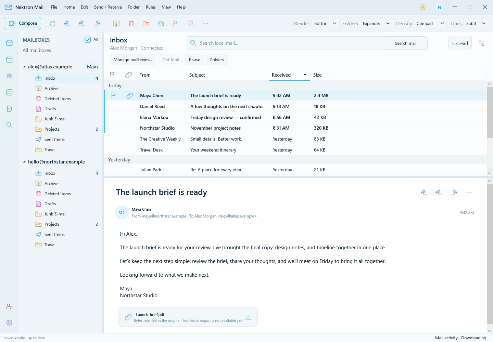

Personal. Business. Together.
Independent mailboxes, saved account order, a main-mailbox choice, folder unread counts, and an optional all-mailboxes sidebar.
NEKTRON PRODUCT FAMILY
A native Windows experienceYour mail. Finally yours.
A calmer place for a busy inbox. Bring your mailboxes together, find the conversation you need, and keep the messages that matter—in an archive you control.
Windows preview 0.1.126 · Signed by Nektron, Inc.

THE EVERYDAY, REIMAGINED
Explore the actual app. A focused workspace, familiar actions, and details that make a difference every day.
FOR THE CONVERSATIONS WORTH KEEPING
Get Mail saves complete originals and attachment bytes to a durable local archive. Downloaded mail remains available offline and independently of your provider.
Move a complete, closed archive to another PC and unlock it using account recovery or your independent recovery key.
How your archive worksOriginal messages · Attachment bytes
Offline reading · Local search
Eligible accounts can authorize selected supported mailboxes for database archiving.
THOUGHT THROUGH, DOWN TO THE DETAILS
Useful capabilities, close at hand. Built around the way you read, write, find, and organize your mail.
Independent mailboxes, saved account order, a main-mailbox choice, folder unread counts, and an optional all-mailboxes sidebar.
Search saved mail locally. Add From, To, Correspondent, Subject, Body, Filename, and date fields as you go. Dock search or give it its own window.
A spacious reader for formatted HTML, embedded images and animated GIFs. Open messages in separate windows and choose how external images load.
Compose in an independent window. Reply, reply all, forward, add file attachments, and save local drafts while your mailbox stays available.
Local whole-folder sorting, day dividers, continuous browsing, an Unread view, optional pagination, and selectable columns with remembered widths.
Right-click for message and folder actions. Mark read or unread, archive, move, or delete. Bulk actions help you handle busy folders.
Keep matching mail read, apply a delay, or mark reviewed messages read after leaving a folder. Choose the folder and optional sender or subject conditions.
Automatic Get Mail, pause and resume, folder workers, and download coverage make progress visible in a separate, non-modal window.
Light and Dark themes, Windows High Contrast support, adjustable reading panes, a resizable folder panel, density options and subtle separators.
INTELLIGENCE, INSIDE THE WORKFLOW
“Keep messages in my notifications folder read.” Describe what you want, review the AI proposal, and use it in the same editor as your manual changes. You decide when to apply it.
Limited access. AI rule assistance requires an eligible NektronAI account. Public subscription purchasing is not available yet.
Use your own words to start or revise a rule.
See the folder, conditions, action and timing.
Make it yours. Rules run on this PC while Mail is open.
Rule assistance sends your prompt, rule draft and folder names to the service. Mail does not automatically attach message bodies or provider credentials.
MAKE ROOM FOR BETTER MAIL
Download the signed Windows preview and explore a more considered way to work with your mail.
Version 0.1.126 · Windows x64 · 60.98 MB
Digitally signed and timestamped by Nektron, Inc.
SHA-256
359ED42CACDBD714979D18669998DDE4BE9E32D5C6F42FDDFB51188CFFE3F8F2This preview supports Amazon WorkMail and Gmail. Gmail currently requires registration as an approved Google test user. Microsoft 365, Outlook.com, other Exchange servers, custom IMAP and POP3 are not available in this release.
No. Get Mail retains original messages and attachment bytes in a durable local archive. Downloaded originals can be read offline. Coverage shows which messages still need downloading, so an incomplete download is not presented as a complete archive.
Yes. Close Mail and copy the complete archive folder. Unlock it on the other PC through the account registered to that archive or with its independent recovery key. Keep a separate backup: account recovery unlocks archive files; it does not restore missing mail files.
Current search uses local database queries over saved mail, with visible fields for precise filtering. You can search attachment filenames. Server search, AI email search, and attachment-content search are not active in this preview.
Eligible accounts can describe supported read-state rules and revise proposals alongside manual edits. The service receives the prompt, rule draft and folder names. Mail does not automatically attach message bodies or provider credentials. Proposals do not activate themselves; you review and apply them.
Rules run on your PC while Nektron Mail is open. Resulting read-state changes synchronize with your provider. A rule can target an exact folder; subfolders retain their own rules.
There is no public Mail subscription checkout yet. Download the Windows preview; contact us about eligible access to AI rule assistance or the database-archive pilot. These features are not automatically included for every new account.
Additional providers, public Gmail rollout, public subscription billing, server and AI email search, attachment-content search, scheduled sending, and generated-document delivery remain in development. The screenshots show real app controls with sample data; they are not examples of private customer mail.